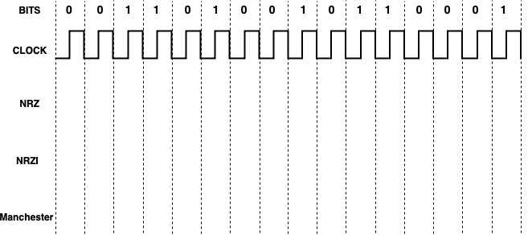
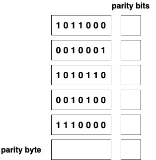

Spring 2022 IS496 Homework 1
Total Points: 70 points
Scope: Chapter 1 - 2
Due: March 4, 2022 by the end of day (11:59 pm CST)
Grouping: To be completed individually
Problems
Problem 1: [8 points: 4 points for each sub-question]
Consider a point-to-point link 10 km in length. At what bandwidth would propagation delay (at the speed of 2×108m/s) equal transmit delay for 125-byte packets? What about 640-byte packets?
Problem 2: [12 points: 3 points for each sub-question]
Suppose a 5-Gbps point to point link is being set up between the Earth and a new lunar colony. The distance from the moon to the Earth is approximately 385,000 km, and the data travels over the link at the speed of light (3×108m/s).
- What's the minimum RTT for the link?
- Use RTT as delay, calculate the bandwidth × delay product for the link.
- What's the significance of the bandwidth × delay product calculated in (b)?
- A rover on the lunar base takes pictures of the moon. Suppose the Mission Control on Earth wishes to download the most recent picture, which is 180 MB. What's the minimum amount of time that will elapse between when the request from the Earth is sent and the transfer is finished?
Problem 3: [8 points: 2 points for each sub-question] For each of the following operations on a remote file server, discuss whether they are more likely to be delay sensitive or bandwidth sensitive.
- Upload a 5GB zip file to the server.
- Delete a directory on the server.
- List the properties of a file.
- Create a new directory on the server.
Problem 4: [6 points] Suppose a shared medium M offers to hosts A1, A2, . . . , AN in round-robin fashion an opportunity to transmit one packet; hosts that have nothing to send immediately relinquish M. How does this differ from STDM? How does network utilization of this scheme compare with STDM?
Problem 5: [18 points: 6 points for each encoding]
Sketch the NRZ, Manchester, and NRZI encoding for the bit stream 0011010010110001. Assume that the NRZI signal starts out low.

Problem 6: [6 points] Assuming a framing protocol that uses bit stuffing, show the bit sequence transmitted over the link when the frame contains the following bit sequence: 100101111100111101111110100001.
Problem 7: [6 points]
Suppose you want to send some data using the BISYNC framing protocol and the last three bytes of your data are ETX, ETX and DLE, what sequence of bytes would be transmitted immediately prior to the CRC?
Problem 8: [6 points: 3 points for each] Answer the following questions:
- Given the following bit sequence. Fill in the parity bits and parity byte using even parity mode.
- Describe why two-dimensional parity fails to detect some 4-bit errors and give an example.

Submission Instructions
Create a PDF file containing your answers. Place your name and netid at the beginning of the file.
Upload the file to the corresponding assignment on Canvas.